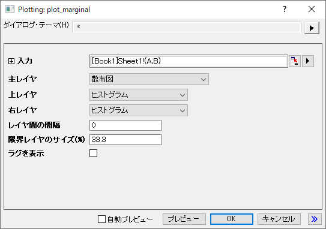

Marginal
少なくとも一組のXY列を選択します。
データを選択します。
作図：統計：分布投影グラフを選択します。
これによりplot_marginalダイアログボックスが開きます。

このダイアログでオプションをカスタマイズし、OKをクリックしてプロットを作成します。作成とカスタマイズについての詳細は 分布投影グラフ ページをご覧下さい。
Marginal_Scatter.OTPU; Marginal_Contour.OTPU (Originプログラムフォルダにインストールされています)